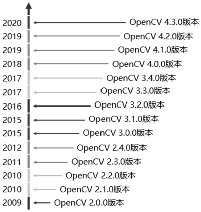
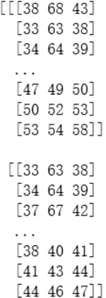
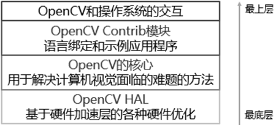

首页 > 编程笔记
OpenCV计算机视觉库简介
OpenCV 是一个开源的计算机视觉库，可以在 Windows、Linux、MacOS 等操作系统上运行。
OpenCV 起源于英特尔性能实验室的实验研究，由俄罗斯的专家负责实现和优化，并以为计算机视觉提供通用性接口为目标。
从 2009 年 3 月至今，OpenCV 的发展历程如下图所示。
随着 OpenCV 被越来越多的用户认可并提供越来越多的技术支持，OpenCV 的研发团队也加大了研究人员和研究经费的投入，这使得 OpenCV 的下载量逐年增长。
OpenCV 的发展不是一帆风顺的。OpenCV 在发展历程中，不仅受到了互联网行业泡沫经济的冲击，还受到了管理层和管理方向不断变更的影响，有时甚至没有研究人员和研究经费的投入。但是，随着多核处理器的出现以及计算机视觉的应用越来越广泛，OpenCV 的应用价值开始上升。
截至目前，OpenCV 已经得到了基金会、一些上市公司和私人机构的支持。OpenCV 的宗旨是促进商业（利用OpenCV构建商业产品）和研究，因此 OpenCV 是开源并且免费的。这不仅使得 OpenCV 拥有着庞大的用户群体，还使得 OpenCV 在世界各国逐渐流行起来。
图 2 一幅显示花朵的彩色图像
如图 2 所示，人类的视觉能够很轻易地从这幅图像中识别花朵。但是，计算机视觉不会像人类视觉那样能够对图像进行感知和识别，更不会自动控制焦距和光圈，而是把图像解析为按照栅格状排列的数字。
以图 2 为例，计算机视觉将其解析为如图 3 所示的按照栅格状排列的数字：
这些按照栅格状排列的数字包含大量的噪声，噪声在图像上常表现为引起较强视觉效果的孤立像素点或像素块，使得图像模糊不清。因此，噪声是计算机视觉面临的一个难题。要让图片变得清晰，就需要对抗噪声。
计算机视觉使用统计的方法对抗噪声，例如，计算机视觉虽然很难通过某个像素或者这个像素的相邻像素判断这个像素是否在图像主体的边缘上，但是如果对图像某一区域内的像素做统计，那么上述判断就变得简单了，即在指定区域内，图像主体的边缘应该表现为一连串独立的像素，而且这一连串像素的方向应该是一致的。
为了有效地解决计算机视觉面临的难题，OpenCV提供了许多模块，这些模块中的方法具有很好的完备性。
那么，OpenCV 包含的模块有哪些呢？下表列举的是 OpenCV 常用的模块。
计算机视觉不仅被广泛地应用到安保行业（例如监控摄像头），还被应用到网页端的图像和视频处理以及游戏交互中，甚至在某些现代化工厂里，被应用到产品质检工作上。
此外，计算机视觉还被应用到一些高精尖领域，包括无人机领域和航空航天领域等，这些领域使用计算机视觉中的图像拼接技术获取街景图像或者航空图像。
OpenCV 自发布起便得到广泛应用，其中包括在安保以及工业检测系统，网络产品以及科研工作，医学、卫星和网络地图（例如，医学图像的降噪，街景图像或者航空图像的拼接及其扫描校准等），汽车自动驾驶，相机校正等。此外，OpenCV 还被应用到处理声音的频谱图像上，进而实现对声音的识别。
OpenCV 起源于英特尔性能实验室的实验研究，由俄罗斯的专家负责实现和优化，并以为计算机视觉提供通用性接口为目标。
从 2009 年 3 月至今，OpenCV 的发展历程如下图所示。

图 1 自 2009 年 OpenCV 的发展历程
图 1 自 2009 年 OpenCV 的发展历程
随着 OpenCV 被越来越多的用户认可并提供越来越多的技术支持，OpenCV 的研发团队也加大了研究人员和研究经费的投入，这使得 OpenCV 的下载量逐年增长。
OpenCV 的发展不是一帆风顺的。OpenCV 在发展历程中，不仅受到了互联网行业泡沫经济的冲击，还受到了管理层和管理方向不断变更的影响，有时甚至没有研究人员和研究经费的投入。但是，随着多核处理器的出现以及计算机视觉的应用越来越广泛，OpenCV 的应用价值开始上升。
截至目前，OpenCV 已经得到了基金会、一些上市公司和私人机构的支持。OpenCV 的宗旨是促进商业（利用OpenCV构建商业产品）和研究，因此 OpenCV 是开源并且免费的。这不仅使得 OpenCV 拥有着庞大的用户群体，还使得 OpenCV 在世界各国逐渐流行起来。
计算机视觉
人类由于被赋予了视觉，因此很容易认为“计算机视觉是一种很容易实现的功能”。但是，这种想法是错误的。图 2 一幅显示花朵的彩色图像
如图 2 所示，人类的视觉能够很轻易地从这幅图像中识别花朵。但是，计算机视觉不会像人类视觉那样能够对图像进行感知和识别，更不会自动控制焦距和光圈，而是把图像解析为按照栅格状排列的数字。
以图 2 为例，计算机视觉将其解析为如图 3 所示的按照栅格状排列的数字：

图 3 计算机视觉中的图片
图 3 计算机视觉中的图片
这些按照栅格状排列的数字包含大量的噪声，噪声在图像上常表现为引起较强视觉效果的孤立像素点或像素块，使得图像模糊不清。因此，噪声是计算机视觉面临的一个难题。要让图片变得清晰，就需要对抗噪声。
计算机视觉使用统计的方法对抗噪声，例如，计算机视觉虽然很难通过某个像素或者这个像素的相邻像素判断这个像素是否在图像主体的边缘上，但是如果对图像某一区域内的像素做统计，那么上述判断就变得简单了，即在指定区域内，图像主体的边缘应该表现为一连串独立的像素，而且这一连串像素的方向应该是一致的。
为了有效地解决计算机视觉面临的难题，OpenCV提供了许多模块，这些模块中的方法具有很好的完备性。
OpenCV包含的模块
OpenCV 是由很多模块组成的，这些模块可以分为很多层，具体如下图所示。

图 4 OpenCV包含的模块的层级结构
图 4 OpenCV包含的模块的层级结构
那么，OpenCV 包含的模块有哪些呢？下表列举的是 OpenCV 常用的模块。
| 模 块 | 说 明 |
| Core | 包含 OpenCV 库的基础结构以及基本操作 |
| Improc | 包含基本的图像转换，包括滤波以及卷积操作 |
| Highgui | 包含用于显示图像或者进行简单输入的用户交互方法。可以看作是一个非常轻量级的 Windows UI 工具包 |
| Video | 包含读取和写视频流的方法 |
| Calib3d | 包含校准单个、双目以及多个相机的算法 |
| Feature2d | 包含用于检测、描述以及匹配特征点的算法 |
| Objdectect | 包含检测特定目标的算法 |
| ML | 包含大量的机器学习的算法 |
| Flann | 包含一些不会直接使用的方法，但是这些方法供其他模块调用 |
| GPU | 包含在 CUDA GPU 上优化实现的方法 |
| Photo | 包含计算摄影学的一些方法 |
| Stitching | 是一个精巧的图像拼接流程的实现 |
为了快速建立精巧的视觉应用，OpenCV 提供了许多模块和方法。开发人员不必过多关注这些模块和方法的具体实现细节，只需关注图像处理本身，就能够很方便地使用它们对图像进行相应的处理。表中的模块随着 OpenCV 的版本不断地更新而发生变化，有的可能被取消，有的可能被融合到其他模块中。
OpenCV的应用
因为 OpenCV 是一个开源的计算机视觉库，所以在举例介绍 OpenCV 的应用之前，先对计算机视觉的应用进行介绍。计算机视觉不仅被广泛地应用到安保行业（例如监控摄像头），还被应用到网页端的图像和视频处理以及游戏交互中，甚至在某些现代化工厂里，被应用到产品质检工作上。
此外，计算机视觉还被应用到一些高精尖领域，包括无人机领域和航空航天领域等，这些领域使用计算机视觉中的图像拼接技术获取街景图像或者航空图像。
OpenCV 自发布起便得到广泛应用，其中包括在安保以及工业检测系统，网络产品以及科研工作，医学、卫星和网络地图（例如，医学图像的降噪，街景图像或者航空图像的拼接及其扫描校准等），汽车自动驾驶，相机校正等。此外，OpenCV 还被应用到处理声音的频谱图像上，进而实现对声音的识别。
关注公众号「站长严长生」，在手机上阅读所有教程，随时随地都能学习。内含一款搜索神器，免费下载全网书籍和视频。

微信扫码关注公众号